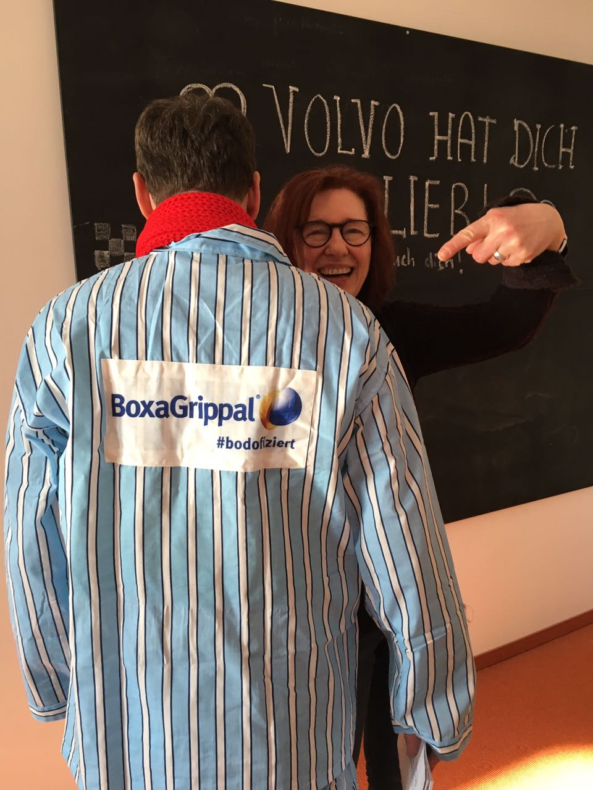

Ein neues Produkt in einem stark besetzten Markt.
Vor etwas mehr als 10 Jahren betreute ich BoxaGrippal von Boehringer Ingelheim. Die Aufgabe war anspruchsvoll: Ein neues OTC-Produkt sollte in einem stark besetzten Erkältungsmarkt schnell relevant werden.
BoxaGrippal brachte damals eine besondere rezeptfreie Kombination auf den Markt: Ibuprofen plus Pseudoephedrin. Für die Kommunikation war entscheidend, diesen Produktvorteil nicht nur sachlich zu erklären, sondern eine Marke aufzubauen, die im Kopf bleibt.

Wer erkältet ist, ist oft nur noch eine schlechte Kopie seiner selbst.
Eine Figur, die den Zustand sofort verständlich machte.
Daraus entstand ein Character mit gestreiftem Schlafanzug, rotem Schal, müdem Gesicht und auffälliger Brille. Eine Figur, die den Zustand einer Erkältung sofort verständlich machte. Ohne lange Erklärung. Ohne komplizierte Produktargumentation.
Was mir zu diesem Zeitpunkt nicht bewusst war: Die Creative Directorin hatte den Character visuell an mich angelehnt. Besonders auch an meine damalige Brille.

Die Kampagne funktionierte. BoxaGrippal wurde schnell bekannt, die Arbeit wurde ausgezeichnet (Effie, Pharma Award Austria) und die Marke konnte sich in einem sehr kompetitiven Umfeld aus dem Stand in den Top 4 etablieren.
Die eigentliche Geschichte kam erst danach.
Boehringer Ingelheim startete einen Namenswettbewerb in über 700 Apotheken. Gesucht wurde ein Name für die Werbefigur. 878 Namensvorschläge wurden eingereicht.
Der Gewinnername war: Bodo.
Nicht von uns vorgeschlagen. Nicht vom Kunden gesteuert. Einfach von den Apotheken gewählt.
Die Figur sah jetzt nicht nur aus wie ich. Jetzt hieß sie auch noch wie ich.



Bodo ging als Bodo.
Die Creative Directorin nahm das zum Anlass, mir für den Düsseldorfer Karneval ein passendes Kostüm zu basteln: Gestreifter Schlafanzug und roter Schal, passend zu meiner Brille. Plötzlich stand ich selbst als BoxaGrippal-Bodo im Raum.
Strategisch war BoxaGrippal ein erfolgreicher Launch.
Persönlich die einzige Kampagne meiner Laufbahn, bei der ich erst Berater war, dann Inspirationsquelle und am Ende Karnevalsversion der Werbefigur.